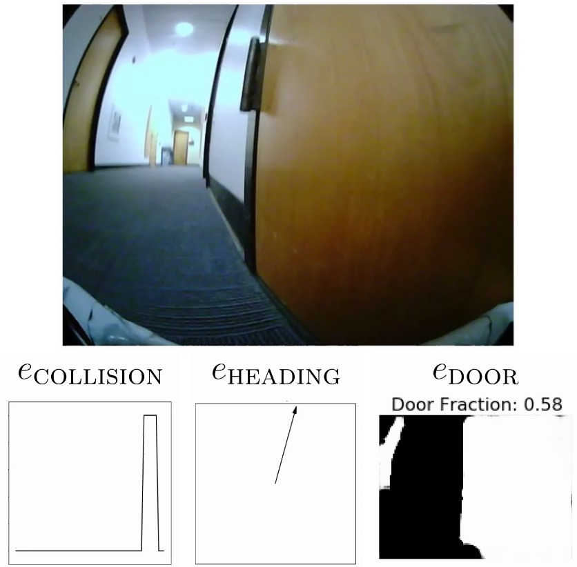
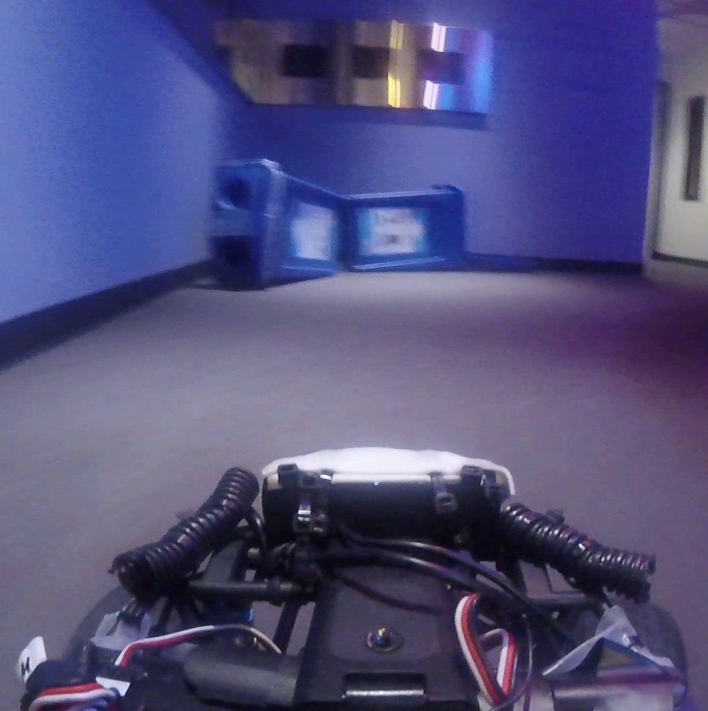
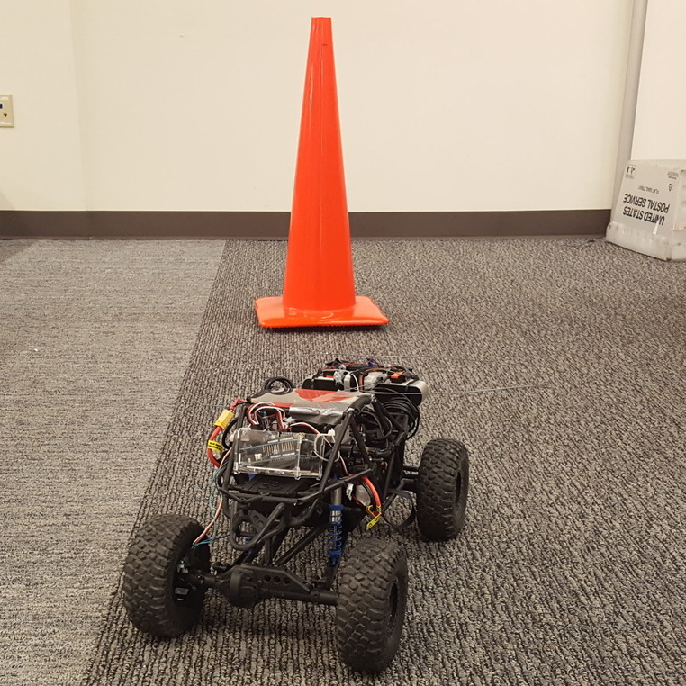

|

|
Composable Action-Conditioned Predictors: Flexible Off-Policy Learning for Robot Navigation
Gregory Kahn*, Adam Villaflor*, Pieter Abbeel, Sergey Levine
CoRL 2018.
[PDF][Video][Code]
We propose a framework that learns event cues from off-policy data, and can flexibly
combine these event cues at test time to accomplish different tasks. These event cue
labels are not assumed to be known a priori, but are instead labeled using learned
models, such as computer vision detectors, and then "backed up" in time using an
action-conditioned predictive model. We show that a simulated robotic car and a
real-world RC car can gather data and train fully autonomously without any human-provided
labels beyond those needed to train the detectors, and then at test-time be
able to accomplish a variety of different tasks.
|
|

|
Self-supervised Deep Reinforcement Learning with Generalized Computation Graphs for Robot Navigation
Gregory Kahn, Adam Villaflor, Bosen Ding, Pieter Abbeel, Sergey Levine
ICRA 2018.
[PDF][Video][Code][Poster][Slides]
We propose a generalized computation graph that subsumes value-based model-free methods and model-based methods, and instantiate this graph to form a navigation model that learns from raw images and is sample efficient. Our simulated car experiments explore the design decisions of our navigation model, and show our approach outperforms single-step and N-step double Q-learning. We also evaluate our approach on a real-world RC car and show it can learn to navigate through a complex indoor environment with a few hours of fully autonomous, self-supervised training.
|
|

|
Uncertainty-Aware Reinforcement Learning for Collision Avoidance
Gregory Kahn, Adam Villaflor, Vitchyr Pong, Pieter Abbeel, Sergey Levine
arXiv:1702.01182
[PDF][Video][Slides]
Practical deployment of reinforcement learning methods must contend with the fact that the training process itself can be unsafe for the robot. In this paper, we consider the specific case of a mobile robot learning to navigate an a priori unknown environment while avoiding collisions. We present an uncertainty-aware model-based learning algorithm that estimates the probability of collision together with a statistical estimate of uncertainty. We evaluate our method on a simulated and real-world quadrotor, and a real-world RC car.
|
|